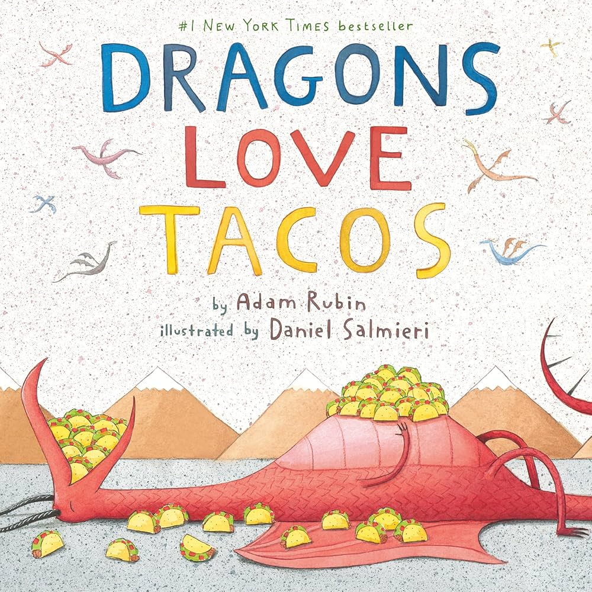
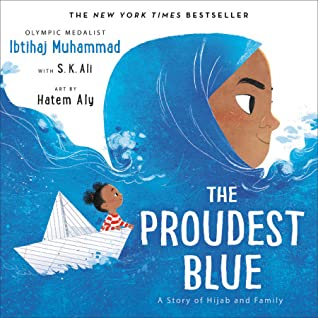
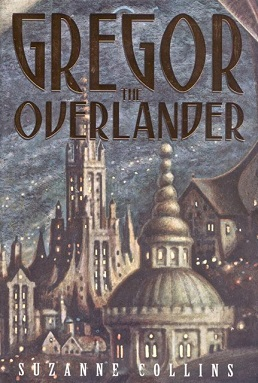
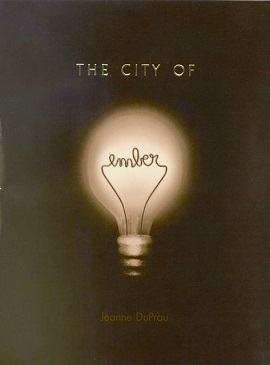
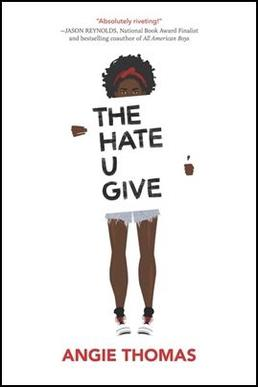

|

Dragons Love Tacos
|
Ages 0–5 (Early Childhood)
- Brown Bear, Brown Bear, What Do You See? by Bill Martin Jr.
- Dragons Love Tacos by Adam Rubin
- Go Sleep in Your Own Bed! by Candace Fleming
- Hair Love by Matthew A. Cherry
- I Ain’t Gonna Paint No More! by Karen Beaumont
- Last Stop on Market Street by Matt de la Peña
- Not Yet Zebra by Lou Kuenzler
- Saturday by Oge Mora
- The Day the Crayons Quit by Drew Daywalt
- The Snowy Day by Ezra Jack Keats
- The Very Hungry Caterpillar by Eric Carle
|
|

The Proudest Blue
|
Ages 6–8 (Early Elementary)
- Alexander and the Terrible, Horrible, No Good, Very Bad Day by Judith Viorst
- Big by Vashti Harrison
- Charlotte’s Web by E. B. White
- Crown: An Ode to the Fresh Cut by Derrick Barnes
- Frog and Toad Are Friends by Arnold Lobel
- Jabari Jumps by Gaia Cornwall
- Mercy Watson to the Rescue by Kate DiCamillo
- The Proudest Blue by Ibtihaj Muhammad
- The Tale of Despereaux by Kate DiCamillo
- Thank You, Omu! by Oge Mora
- We Don’t Eat Our Classmates by Ryan T. Higgins
|
|

Gregor the Overlander
|
Ages 9–11 (Upper Elementary)
- Amina's Voice by Hena Khan
- Bridge to Terabithia by Katherine Paterson
- Chronicles of Narnia: The Lion, the Witch and the Wardrobe by C. S. Lewis
- Dog Man by Dav Pilkey
- Front Desk by Kelly Yang
- Gregor the Overlander by Suzanne Collins
- Percy Jackson and the Lightning Thief by Rick Riordan
- The Girl Who Drank the Moon by Kelly Barnhill
- The One and Only Ivan by Katherine Applegate
- The Phantom Tollbooth by Norton Juster
- Wonder by R. J. Palacio
|
|

The City of Ember
|
Ages 11–13 (Middle School)
- A Long Walk to Water by Linda Sue Park
- A Wrinkle in Time by Madeleine L’Engle
- Because of Winn-Dixie by Kate DiCamillo
- Brown Girl Dreaming by Jacqueline Woodson
- The Crossover by Kwame Alexander
- The City of Ember by Jeanne DuPrau
- Ghost by Jason Reynolds
- Hatchet by Gary Paulsen
- Holes by Louis Sachar
- Hoot by Carl Hiaasen
- New Kid by Jerry Craft
- The Outsiders by S. E. Hinton
- The Giver by Lois Lowry
|
|

The Hate U Give
|
Ages 14–18 (Young Adult)
- A Good Girl’s Guide to Murder by Holly Jackson
- Children of Blood and Bone by Tomi Adeyemi
- Clap When You Land by Elizabeth Acevedo
- Divergent by Veronica Roth
- Eleanor & Park by Rainbow Rowell
- The Fault in Our Stars by John Green
- Harry Potter and the Sorcerer’s Stone by J. K. Rowling
- The Hunger Games by Suzanne Collins
- One of Us Is Lying by Karen M. McManus
- The Hate U Give by Angie Thomas
- The Selection by Kiera Cass
- The Book Thief by Markus Zusak
- We Were Liars by E. Lockhart
|
 The Chronicles of Narnia
The Chronicles of Narnia
|
Top Favorites
My Personal Top 5 Favorite Series From My Book Recommendation List:
- Chronicles of Narnia
- Harry Potter
- The Hunger Games
- The City of Ember
- The Selection
|
© 2026 Marybeth Hamilton. Book cover images are displayed for educational,
informational, and reader advisory purposes. Copyright remains with the
respective authors, publishers, and copyright holders.
|
Why These Recommendations Matter
- This book list is a strong collection of children's and young adult literature...
- These books provide students with mirrors and windows...
- The list includes a variety of genres...
- Many of these books have received awards...
- These titles promote literacy, empathy, critical thinking, imagination, and a lifelong love of reading.
- Together, they create an excellent starting point for students seeking their next great book.
|
Want More Information About These Books?
Visit
Goodreads
to read reviews, explore series, and discover similar books.
Visit Kirkus Reviews
to read professional book reviews and discover new titles.
Visit School Library Journal
for book reviews, reading recommendations, library news, and resources for educators and librarians.
|